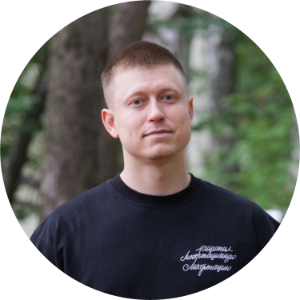
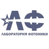
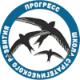
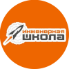

Konstantin Pavlovich LatkinЛаткин Константин Павлович
Doctor of Philosophy in EngineeringКандидат технических наук
email: latkin.k.p@ya.ru
contacts: linkконтакты: ссылка
| Reader, Department of General Physics, Perm National Research Polytechnic UniversityДоцент кафедры "Общая физика", Пермский национальный исследовательский политехнический университет |
LinksСсылки
ORCID: 0009-0000-7526-9088
ResearchGate: Konstantin-Latkin
Web of Science: C-2159-2018
Scopus: 57188338400
eLibrary: 7973-2250
KeywordsКлючевые слова
Fiber optics, active optical fibers, spectroscopy, automation and controlling systems, virtual reality, augmented realityВолоконная оптика, активные волоконные световоды, спектроскопия, автоматизация и системы управления, виртуальная реальность, дополненная реальность
ArticlesПубликации
- Латкин, К. П. Автоматизация неразрушающего контроля параметров заготовок активных волоконных световодов на основе измерения интенсивности люминесценции примеси в безыммерсионной среде : специальность 2.3.3 «Автоматизация и управление технологическими процессами и производствами» : автореферат диссертации на соискание ученой степени кандидата технических наук / Латкин Константин Павлович ; Пермский национальный исследовательский политехнический университет. — Пермь, 2025. — 20 c. : ил.
- Латкин, К. П. Автоматизация неразрушающего контроля параметров заготовок активных волоконных световодов на основе измерения интенсивности люминесценции примеси в безыммерсионной среде : специальность 2.3.3 «Автоматизация и управление технологическими процессами и производствами» : диссертация на соискание ученой степени кандидата техническических наук / Латкин Константин Павлович ; Пермский национальный исследовательский политехнический университет. — Пермь, 2025. — 126 с. — Библиогр.: с. 96-114.
- Konstantinov, Y. A. A Non-Destructive Study of Optical, Geometric and Luminescent Parameters of Active Optical Fibers Preforms / Y. A. Konstantinov, A. T. Turov, K. P. Latkin, Claude D., I. S. Azanova // Optics. — 2024. — №5 (1). — С. 176-194. — DOI 10.3390/opt5010013. (Web of Science, Scopus)
- Носков, М. Е. Очки дополненной реальности для визуализации данных компьютеризированной техники / М. Е. Носков, К. П. Латкин // Автоматизированные системы управления и Информационные технологии : Материалы всероссийской научно-технической конференции, Пермь, 07-09 июня 2023 года. — Пермь: Пермский национальный исследовательский политехнический университет, 2023. — С. 328-332.
- Latkin, K. P. The Simulation of Active Ions Luminescence in the Preform Core under the Pumping Through the Lateral Surface / K. P. Latkin // Optics Communications. — 2023. — №542. — C. 129564. — DOI 10.1016/j.optcom.2023.129564. (Web of Science, Scopus)
- Латкин, К. П. Система управления процессом контроля концентрации активной примеси в преформах волоконных световодов / К. П. Латкин, В. П. Первадчук, Ю. А. Константинов // Вестник Пермского национального исследовательского политехнического университета. Электротехника, информационные технологии, системы управления. — 2022. — №42. — С. 111-131. — DOI 10.15593/2224-9397/2022.2.06. (ВАК)
- Burdin, V. V. Multistage Quality Control Of Active Fiber Light Guides / V. V. Burdin, Y. A. Konstantinov, Claude D., K. P. Latkin, M. E. Belokrylov, A. I. Krivosheev, M. K. Tsibinogina // Instruments and Experimental Techniques. — 2021. — №5 (64). — С. 768-775. — DOI 10.1134/S0020441221050031. (Web of Science, Scopus, ВАК)
- Белокрылов, М. Е. Рефлектометрический метод измерения длины активных волоконных световодов / М. Е. Белокрылов, Ю. А. Константинов, К. П. Латкин, Клод Д., Д. А. Селезнев, А. А. Стёпин, Ю. А. Конин, В. А. Щербакова, Р. Р. Кашина // Оптическая рефлектометрия, метрология и сенсорика — 2020 : Сборник тезисов докладов, Пермь, 23-24 сентября 2020 года. — Пермь: Пермский федеральный исследовательский центр Уральского отделения Российской академии наук, 2020. — С. 29-30.
- Belokrylov, M. E. An All-Fiber Time Domain Reflectometer For Measuring The Length Of Active Erbium Doped Optical Fibers / M. E. Belokrylov, Y. A. Konstantinov, K. P. Latkin, Claude D., V. A. Shcherbakova, D. A. Seleznev, A. A. Stepin, Y. A. Konin, R. R. Kashina // Instruments and Experimental Techniques. — 2020. — №4 (63). — С. 481-486. — DOI 10.1134/S0020441220050012. (Web of Science, Scopus, ВАК)
- Латкин, К. П. Аналитическая оценка мощности люминесценции ионов эрбия в преформе активного волоконного световода / К. П. Латкин, А. С. Смирнов, В. В. Бурдин // Вестник Пермского федерального исследовательского центра. — 2020. — №4. — С. 41-46. — DOI 10.7242/2658-705X/2020.4.3.
- Белокрылов, М. Е. Комплексный охват проблематики создания оптоэлектронных устройств на примере элементной базы волоконно-оптических датчиков / М. Е. Белокрылов, А. И. Кривошеев, К. П. Латкин, Ф. Л. Барков, В. В. Бурдин, Ю. А. Константинов, Р. С. Пономарев // Вестник Пермского федерального исследовательского центра. — 2020. — №4. — С. 55-61. — DOI 10.7242/2658-705X/2020.4.5.
- Латкин, К. П. Оценка мощности люминесценции сердцевины заготовки волоконных световодов для измерения концентрации активных ионов / К. П. Латкин, В. В. Бурдин, Ю. А. Константинов, В. П. Первадчук // Фотон-экспресс. — 2019. — №6 (158). — С. 170-171. — DOI 10.24411/2308-6920-2019-16085.
- Латкин, К. П. Метод измерения абсолютной концентрации ионов эрбия в преформе активного волокна / К. П. Латкин, А. С. Смирнов, Ю. А. Константинов, В. В. Бурдин // Вестник Пермского научного центра УрО РАН. — 2018. — №4. — С. 21-26. — DOI 10.7242/1998-2097/2018.4.3.
- Konstantinov, Yu. A. Special Optical Fiber Preform Layers 3D-Reconstruction / Yu. A. Konstantinov, K. P. Latkin, F. L. Barkov, A. S. Smirnov, M. M. Poskrebyshev, V. P. Pervadchuk, D. B. Vladimirova, Yu. A. Konin, A. I. Garanin, V. V. Burdin // Scientific Visualization. — 2017. — №4 (9). — С. 47-58. — DOI 10.26583/sv.9.4.05. (Scopus, ВАК)
- Зырянов, С. В. Метод быстрого исследования компонент рассеяния Мандельштама-Бриллюэна, основанный на применении системы селективных отражателей / С. В. Зырянов, М. В. Ременникова, А. С. Смирнов, К. П. Латкин, Ф. Л. Барков, В. В. Бурдин, И. А. Лобач, Ю. А. Константинов // Фотон-экспресс. — 2017. — № 6(142). — С. 199-200.
- Ременникова, М. В. Исследование оптических свойств гольмиевых волоконных световодов в меняющихся температурных условиях / М. В. Ременникова, Ю. А. Константинов, А. С. Смирнов, Ф. Л. Барков, К. П. Латкин // Фотон-экспресс. — 2017. — № 6(142). — С. 268-269.
- Konstantinov, Yu. A. Special Optical Fiber Preform Layers 3D-Reconstruction / Yu. A. Konstantinov, K. P. Latkin, F. L. Barkov, A. S. Smirnov, M. M. Poskrebyshev, V. P. Pervadchuk, D. B. Vladimirova, Yu. A. Konin, A. I. Garanin, V. V. Burdin // GraphiCon 2017 27th International Conference on Computer Graphics and Vision Conference Proceedings : Труды 27-й Международной конференции по компьютерной графике и машинному зрению, Пермь, 24-28 сентября 2017 года / Пермский государственный национальный исследовательский университет. — Пермь: Издательский центр Пермского государственного национального исследовательского университета, 2017. — P. 74-78.
- Latkin, K. P. The precision analisys of results obtained by the method of concentration homogenity control along the preform / K. P. Latkin, A. S. Smirnov // Инновационные процессы в исследовательской и образовательной деятельности. — 2017. — №1. — С. 27-31.
- Smirnov, A. S. Rapid Method For Evaluating The Efficiency Of Excitation Energy Transfer Between Ytterbium And Erbium Ions In An Active Fiber Preform / A. S. Smirnov, K. P. Latkin, A. S. Kurkov, Y. E. Sadovnikova, E. G. Leksina // Optoelectronics, Instrumentation and Data Processing. — 2015. — №6 (51). — С. 582-586. — DOI 10.3103/S8756699015060096. (Web of Science, ВАК)
- Латкин, К. П. Измерение однородности концентрации активной легирующей присадки вдоль длины активной оптической заготовки / К. П. Латкин, А. С. Смирнов, В. В. Бурдин, А. С. Курков // Фотон-экспресс. — 2015. — №6 (126). — С. 157-158.
- Латкин, К. П. Оценка равномерности распределения ионов эрбия вдоль преформы активного оптического волокна по интенсивности люминесценции на разных длинах волн / К. П. Латкин, А. С. Смирнов, Ю. А. Константинов, В. В. Бурдин // Вестник Пермского научного центра УрО РАН. — 2015. — №3. — С. 4-11.
- Смирнов, А. С. Спектроскопический метод измерения однородности концентрации эрбия вдоль длины активной оптической заготовки / А. С. Смирнов, К. П. Латкин, В. В. Бурдин // Научные исследования и инновации. — 2014. — № 2. — С. 62.
- Беспрозванных, В. Г. Оптико-механическая модель измерения характеристик волоконного световода / В. Г. Беспрозванных, В. Р. Каюмов, К. П. Латкин, И. С. Стволов // Сборник научных трудов SWorld. — 2014. — Т. 27, № 3. — С. 3-7.
- Smirnov, A. S. Method for estimating the efficiency rate of an exciting energy transfer between Ytterbium and Erbium ions in a preform / A. S. Smirnov, K. P. Latkin, A. S. Kurkov // Инновационные процессы в исследовательской и образовательной деятельности. — 2014. — №1. — С. 151-152.
- Латкин, К. П. Метод измерения однородности концентрации активной легирующей присадки вдоль длины активной оптической заготовки / К. П. Латкин, А. С. Смирнов // Прикладная математика, механика и процессы управления. — 2014. — №1. — С. 106-108.
- Смирнов, А. С. Спектроскопический метод измерения однородности концентрации эрбия вдоль длины активной оптической заготовки / А. С. Смирнов, К. П. Латкин, В. В. Бурдин // Прикладная фотоника. — 2014. — №2. — С. 62-70. — DOI 10.15593/2411-4367/2014.2.04.
PatentsПатенты
- Патент №2798083 C1 Российская Федерация, МПК G01C 21/08. Система управления объектом : № 2022108532 : заявл. 31.03.2022 : опубл. 15.06.2023 / Н. А. Кычкин, С. Г. Каримов, К. П. Латкин, Н. В. Аксенов, Д. О. Сирин.
ProgramsПрограммы
- Свидетельство о государственной регистрации программы для ЭВМ №2022666232 Российская Федерация. ErGO System : № 2022663356 : заявл. 07.07.2022 : опубл. 26.08.2022 / К. П. Латкин, Ф. Л. Барков, Claude D.
- Свидетельство о государственной регистрации программы для ЭВМ №2022660503 Российская Федерация. erbiumCalc : № 2022660112 : заявл. 06.06.2022 : опубл. 17.06.2022 / К. П. Латкин.
LinksСсылки
LinkedIn: latkinkp
Habr: latkinkp
Experience (science)Опыт (наука)
-
Oct 2013 - Aug 2025Окт 2013 - Авг 2025

Russian Academy of Sciences, Perm federal research center, Laboratory of PhotonicsРоссийская академия наук, Пермский федеральный исследовательский центр, Лаборатория фотоники Title: Junior researcherДолжность: младший научный сотрудник
Experience: prepared and published scientific articles; conducted experimental research in photonics; developed and implemented automation solutions for calculations and measurementsОпыт: подготовка и публикация научных статей; проведение экспериментальных исследований в области фотоники; разработка и внедрение решений для автоматизации расчётов и измерений
-
Feb 2014 - Jun 2015Фев 2014 - Июн 2015
Perm Scientific-Industrial Instrument Making CompanyПермская научно-производственная приборостроительная компания Title: Research engineerДолжность: инженер-исследователь
Experience: performed research measurements for the production of active fibersОпыт: проведение исследовательских измерений для производства активных волоконных световодов
Experience (higher education)Опыт (высшее образование)
-
Sep 2025 - PresentСен 2025 - настоящее время
Perm National Research Polytechnic University, Deparment of General PhysicsПермский национальный исследовальский политехнический университет, кафедра "Общая физика" Title: ReaderДолжность: доцент кафедры
Courses taught: Optical Materials Science; Waveguide PhotonicsПреподаваемые дисциплины: оптическое материаловедение; волноводная фотоника
Experience: organising and delivering distance learning sessionsОпыт: организация и проведение дистанционных занятий
-
Sep 2019 - Aug 2025Сен 2019 - Авг 2025
Perm National Research Polytechnic University, Deparment of General PhysicsПермский национальный исследовальский политехнический университет, кафедра "Общая физика" Title: Senior lecturer, engineerДолжность: старший преподаватель, инженер
Courses taught: Optical Materials Science; Laser, Nonlinear and Recording Materials; Waveguide Photonics; PhysicsПреподаваемые дисциплины: оптическое материаловедение; лазерные, нелинейные и регистрирующие среды; волноводная фотоника; физика
Experience: operation of equipment during general physics laboratory sessions; supervised students in preparing and defending their graduation thesesОпыт: эксплуатация оборудования при проведении лабораторных работ по общему курсу физики; руководство студентами при подготовке и защите выпускных работ
-
Sep 2015 - Aug 2019Сен 2015 - Авг 2019
Perm National Research Polytechnic University, Deparment of General PhysicsПермский национальный исследовальский политехнический университет, кафедра "Общая физика" Title: Assistant lecturer, laboratory technicianДолжность: ассистент, учебный мастер
Courses taught: Optical Materials Science; Waveguide Photonics; Fundamentals of Holography; Solid-state physics; PhysicsПреподаваемые дисциплины: оптическое материаловедение; волноводная фотоника; основы голографии; физика твёрдого тела; физика
Experience: operation and calibration of laboratory equipment (Abbe and Pulfrich refractometers, durometer, spectrophotometer) during laboratory practical sessions; experience participating in events to promote the university to prospective studentsОпыт: эксплуатация и калибровка лабораторного оборудования (рефрактометры Аббе и Пульфриха, твердомер, спектрофотометр) в ходе проведения лабораторных практических работ; опыт участия в мероприятиях по продвижению университета среди абитуриентов
Experience (secondary education)Опыт (среднее образование)
-
Sep 2025 - Jun 2026Сен 2025 - Июн 2026

Progress SchoolОбразовательное частное учреждение "Прогресс" Title: Mathematics and information technology teacherДолжность: учитель математики и информатики
Experience: experience working with lower secondary students; organising and delivering popular science events for school students; supervising school science projects and preparing students for scientific-practical conferencesОпыт: опыт работы с учениками средних классов; организация и ведение научно‑популярных мероприятий для школьников; руководство школьными научными проектами, подготовка учеников к научно‑практическим конференциям
-
Nov 2019 - Jul 2025Ноя 2019 - Июл 2025

Perm Engineering SchoolИнженерная школа им. М. Ю. Цирульникова г. Перми Title: Physics teacherДолжность: учитель физики
Experience: experience working with upper secondary students; supervising school science projects and preparing students for scientific-practical conferencesОпыт: опыт работы с учениками старших классов; руководство школьными научными проектами, подготовка учеников к научно‑практическим конференциям
Education
Образование
-
May 2025Май 2025
Doctor of Philosophy in EngineeringКандидат технических наук

University: Perm National Research Polytechnic University, Perm, Russian FederationУниверситет: Пермский национальный исследовательский политехнический университет, Пермь, Российская Федерация
Theme: Automation of Non-Destructive Testing of Active Optical Fiber Preforms by Measuring Dopant Luminescence Intensity in an Immersion-Free EnvironmentТема: Автоматизация неразрушающего контроля параметров заготовок активных волоконных световодов на основе измерения интенсивности люминесценции примеси в безыммерсионной среде
-
Oct 2015 - Jul 2019Окт 2015 - Июл 2019
Postgraduate degreeАспирантура

University: Perm National Research Polytechnic University, Perm, Russian FederationУниверситет: Пермский национальный исследовательский политехнический университет, Пермь, Российская Федерация
Program: Control in Technical SystemsПрограмма: Управление в технических системах
-
Sep 2013 - Jun 2015Сен 2013 - Июн 2015
University: Perm National Research Polytechnic University, Perm, Russian FederationУниверситет: Пермский национальный исследовательский политехнический университет, Пермь, Российская Федерация
Program: Motion Control Systems and NavigationПрограмма: Системы управления движением и навигация
-
Sep 2009 - Jun 2013Сен 2009 - Июн 2013
University: Perm National Research Polytechnic University, Perm, Russian FederationУниверситет: Пермский национальный исследовательский политехнический университет, Пермь, Российская Федерация
Program: Photonics and Optical InformaticsПрограмма: Фотоника и оптоинформатика


Further educationПовышение квалификации
-
2025
Преподавание математики и физики в высших технических учебных заведениях

-
2023
Преподавание учебного предмета "Физика" в соответствии с требованиями обновленного ФГОС СОО

-
2023
Основы оказания первой помощи профессорско-преподавательским составом

-
2023
-
2023
-
2021
-
2020
-
2018
Инновационные подходы к научно-педагогической деятельности работника университета

-
2017
Современные научно-педагогические технологии по приоритетным направлениям развития университета

-
2017
-
2016
Инновационные подходы к научно-педагогической деятельности работника университета


OthersДругое
.png)
.png)
-
2022
Ученые Пермского Политеха нашли экономичный способ повысить качество оптоволокна (PNRPU siteсайт ПНИПУ)
Ученые нашли экономичный способ повысить качество оптоволокна (ScientificRussia siteсайт Научная Россия) -
2022
Жми в науку: виртуальная реальность (NeSekretno siteсайт НеСекретно)
Видео (VK Video siteсайт VK Видео)